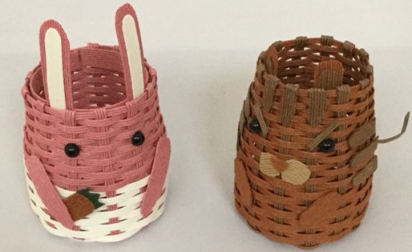
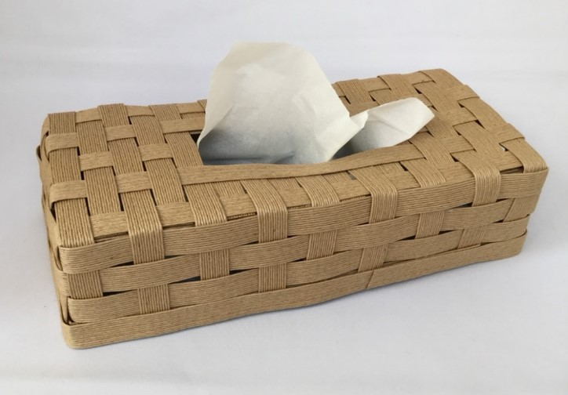
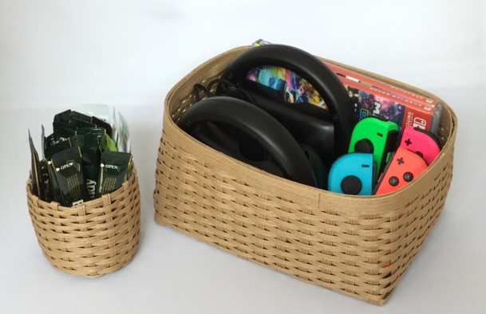

Craft band is usually made of 12 flat glued threads connected in 1 band. You can split the craft band to the width you want, or add a bond to the side. As for the color of the craft band, there are ones with a single color and ones with 12 threads.



If you want to see other works, please visit these sites.
If you are interested in craft bands, you can purchase them from these links.
| [Yuki's Top Page] |
Copyright (c) 2019 Yuki Igarashi |